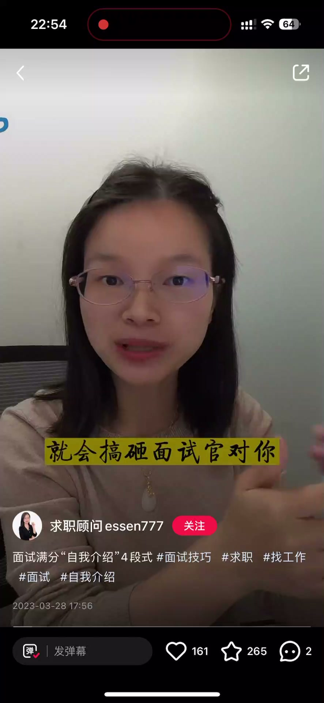
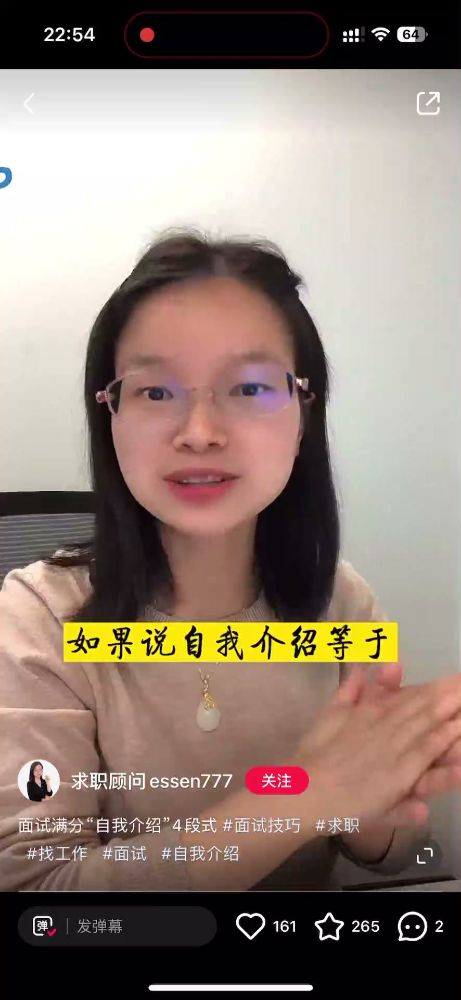
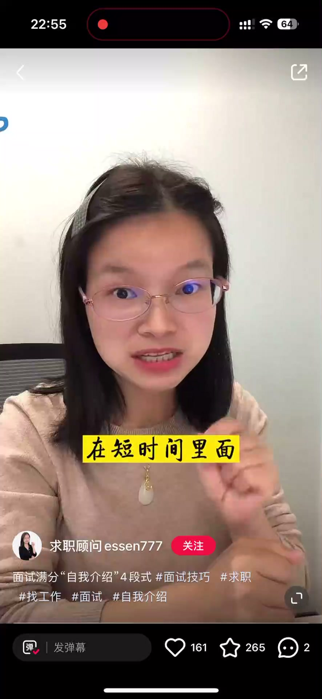
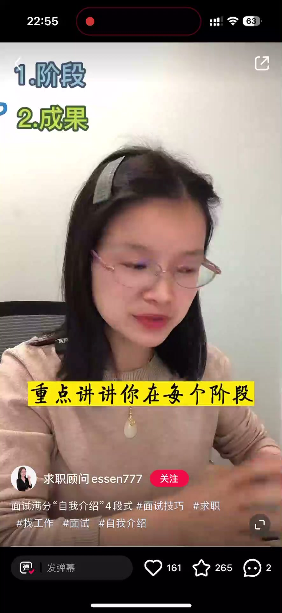

内容要点
一段 1 分钟的自我介绍课：想给面试官建立好印象，开场自我介绍太重要了，但近九成学员讲不好——最大误区就是把简历简单复述一遍。面试官要自我介绍有两个目的：一是面试热身、把双方拉进面试风格，二是通过自我介绍建立对你的第一印象。真正的方法是讲好一个生动的「我是谁」故事，按四个步骤组织。
知识结构
自我介绍最大的误区就是把简历简单复述一遍。如果自我介绍等于复述简历，面试官直接看简历就好了，何必浪费时间让你再背一遍？
目的有两个：一是面试热身，快速把双方拉到面试的风格里面去；二是面试官通过你的自我介绍建立对你的第一印象。所以自我介绍要在短时间内快速抓住面试官注意力。
①把过往履历分成几个阶段，按行业、岗位不同拆分；②重点讲每个阶段除重点工作外的重要产出、重要技巧、个人成长收获；③整体总结核心优势与竞争力，突出与岗位匹配的点；④讲清求职诉求：为什么来这场面试、之前为什么离职、接下来想找哪方面工作。
自我介绍不是复述简历，而是讲一个「我是谁」的故事：分阶段、讲产出、总结优势、说清诉求，四步抓住面试官注意力。
00:00-00:30误区与目的：自我介绍≠复述简历
开场点题：想要给面试官建立个好印象，开场的自我介绍太重要了，你讲不好自我介绍，就会搞砸面试官对你建立的第一印象。讲者做面试辅导的学员里，有将近九成同学其实是讲不好自我介绍的。
指出最大误区：自我介绍就是把简历简单再复述一遍。可以试想一下，如果说自我介绍等于复述简历的话，那面试官直接看简历就好了，何必再浪费时间让你再背一遍呢？
讲面试官要自我介绍的真正目的：主要有两个——一是面试热身，快速把双方拉到面试的风格里面去；二是面试官通过你的自我介绍建立对你的第一印象。所以自我介绍在短时间内一定要快速抓住面试官注意力，让面试官有意愿继续往下听、有想再深度了解你的欲望。


00:31-01:05四步故事法
怎么才能抓住面试官注意力？一定要讲好一个生动的、关于我是谁的故事。如果自我介绍能讲清楚下面这四点，一定会让面试官眼前一亮。
第一点：你过往的履历是分成几个阶段的，可以按照行业不同、岗位不同进行拆分。
第二点：重点讲讲你在每个阶段除了重点工作以外的重要产出、重要技巧，以及你自己个人的成长收获等等。
第三点：整体总结一下你的核心优势、你的竞争力有哪些，比如说经验、技能、综合能力等等，尽可能突出跟这个岗位相匹配的点。最后一点：讲清楚你的求职诉求——你今天为什么愿意来参加这场面试，可以讲讲你上一家公司是因为什么原因离职的，以及接下来你重点想找哪一方面的工作。


完整转录（42段）
以下文本由 Whisper medium 模型自动转录，可能存在少量识别误差，已尽可能修正。
想要给面试官建立个好印象
开场的自我介绍太动摇了
你讲不好自我介绍
就会搞砸面试官对你建立的第一印象
然后我做面试辅导学员里面有将近九成同学
其实是讲不好自我介绍的
自我介绍最大的误区就是把简历简单的再重新复述一遍
我们可以试想一下
如果说自我介绍等于复述简历的话
那面试官直接看简历就好了
何必再浪费时间让你再背一遍呢
面试官之所以要让你自我介绍
目的主要有两个
一个是面试运热
快速把双方拉到面试的风格里面去
二是面试官通过你的自我介绍
建立对你的第一印象
所以你的自我介绍在短时间里面
一定要快速抓住面试官注意力
让面试官有意愿继续往下停
有想再深度了解你的欲望
怎么才能抓住面试官注意力呢
一定要讲好一个生动的关于我是谁的故事
如果说你的自我介绍能够讲清楚下面这四点
我相信一定会让面试官眼前一亮
第一你过往的履历是分成几个阶段
可以按照行业不同
岗位不同进行拆分
第二重点讲讲
你在每个阶段除了重点工作以外的
重要的产出
重要的技巧
以及你自己个人的成长收获等等
第三整体总结一下
你的核心优势
你的竞争力有哪一些
比如说经验技能综合能力等等
尽可能的要突出跟这个岗位想匹配的点
最后一点要讲清楚你的求职诉求是什么
你今天为什么愿意来参加这场面试
可以讲讲你上下公司是因为什么原来离职的
以及接下来你重点想找哪一方面的工作